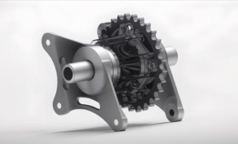

PROJECT 07 / Baja SAE drivetrain development
A compact differential from CAD to hardware
Designed and analyzed a cage-less open differential for a four-wheel-drive ATV.
Design, analysis & hardware
What needed to change.
The drivetrain needed a compact, lightweight open differential arrangement suited to the ATV's packaging.
My part in the work.
Used SolidWorks for mechanical design and ANSYS for finite-element analysis, with attention to assembly.


How I approached it.
- Developed the differential geometry for the drivetrain package.
- Analyzed the design using FEA.
- Considered assembly requirements and documented the resulting hardware.
What the work delivered.
The earlier portfolio records the CAD, analysis, and physical differential.
Packaging, assembly, and structural behavior need to be considered together.